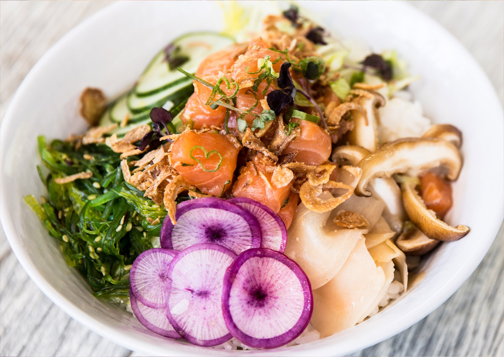
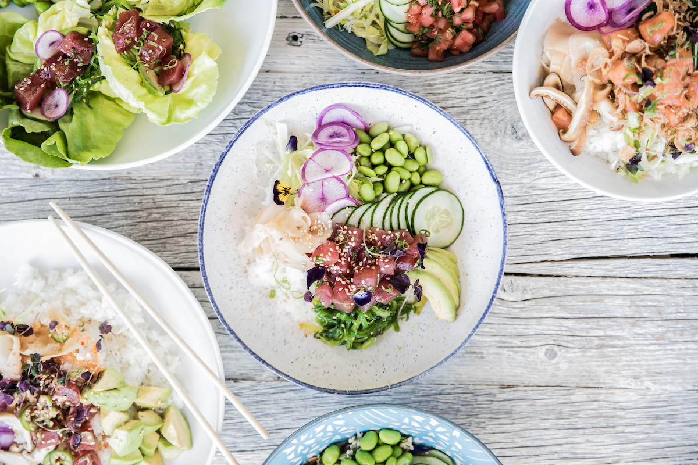
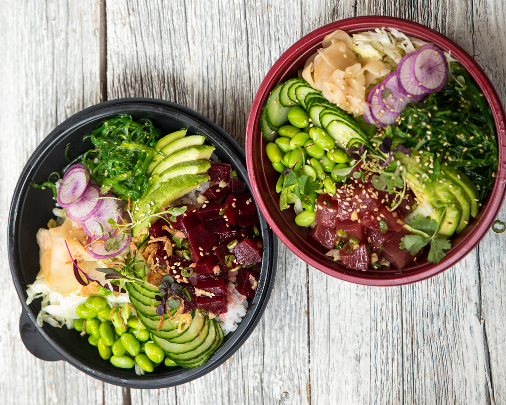
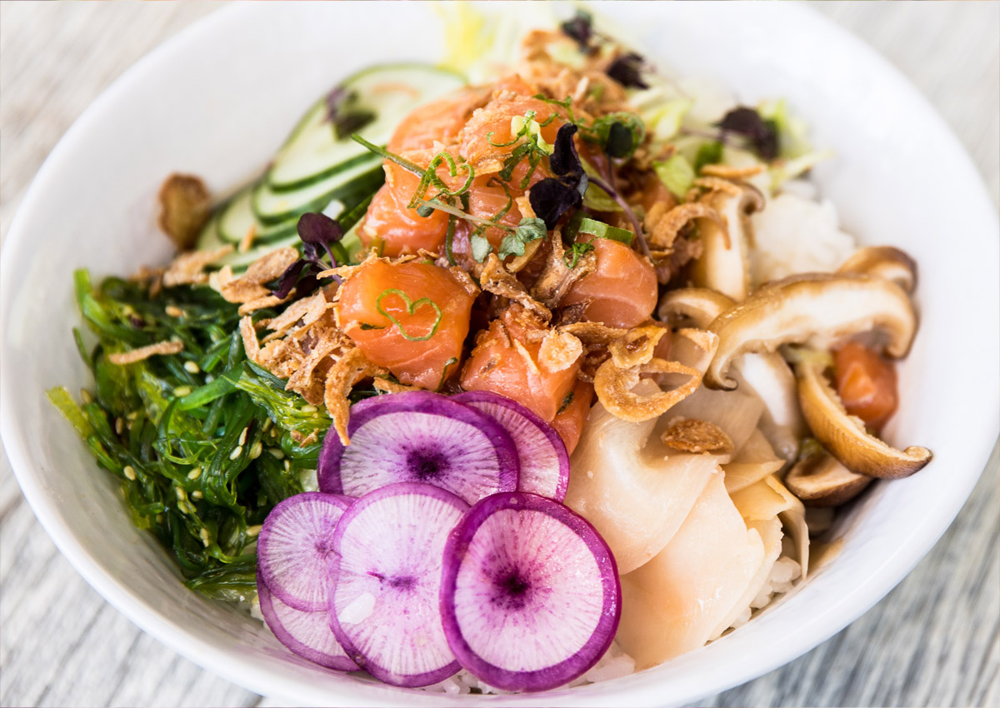
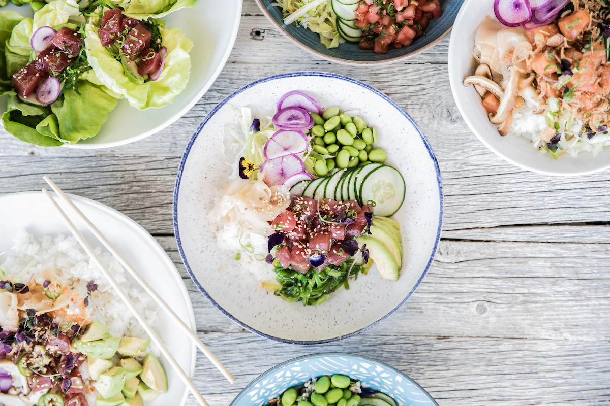
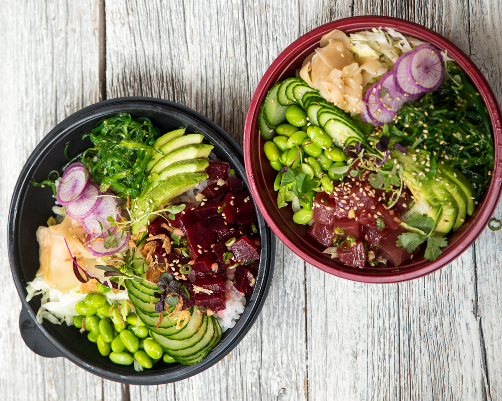

ASAP Poke was born out of a single idea: to bring Chicago the freshest, sushi-quality fish coupled with seasonal ingredients, as fast as possible
Honoring the island tradition of sushi-quality fish and seasonal products, ASAP Poke is a chef-driven, delivery-only concept in Lincoln Park. Choose from our signature poke bowls or handcraft your own from an extensive list of ingredients, toppings and sauces.
 




